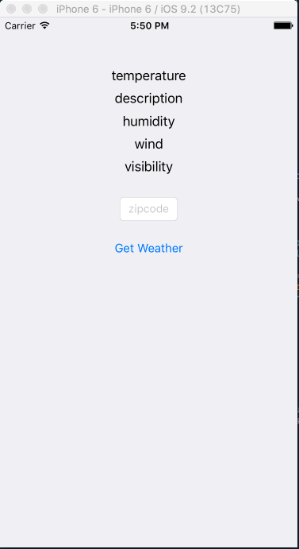

In this lab, we cover the basics of the xCode IDE, the iPhone simulator, xCode Documentation, and Objective-C. By the end of lab, we'll have built a simple iPhone appliation that displays weather from the wunderground.com API
To complete this lab, you'll need to download xCode 7.2 or work on a lab computer.
First, a little about xCode's layout:
 bottom: debugger (bottom left:variables, bottom right:console)")
Some helpful xCode shortcuts and tips
| View Documentation: | ⌥+Click |
| Open Docs: | ⌘+⇧+0 |
| Go to Definition: | ⌘+Click |
| Open file Quickly: | ⌘+⇧+O |
⌘ = Command | ⌥ = Option | ⇧ = Shift
Some helpful iPhone simulator shortcuts and tips
| Press Home Button: | ⇧⌘+H |
| Rotate Left | ⌘← |
| Rotate Right | ⌘→ |
| If the keyboard isn't appearing/disapperaing as expected: | Hardware -> Keyboard |
Xcode Documentation
Shortcut: ⌘+⇧+0

It's kind of amazing.

It syncs locally, which takes a while

But once it's downloaded, it's crazy fast.

It includes ready-to-build example projects for downloads.

You can get to class documentation by option+clicking the class in question.
Some info about Objective-C

Let's get this out of the way. Objective-C Looks Weird.
It's a strict superset of C, which adds a lot of cruft, which makes it a huge language. So it's kind of unweildy to manipulate.

Unfortunately, I'm running out of gifs to explain it to you. Enough fooling around. Let's bring the buzz-feed part of this lecture to a halt.
Let's look at some actual syntax
![[object performAction]; object.performAction();](images/lab0/example1.png)
This example is clear enough. We're sending a method's selector (performAction to an object (object)
![[object performAction:firstParameter]; object.performAction(firstParameter);](images/lab0/example2.png)
Here, you're sending a method's selector selector, with a parameter to the same object.
![[object performAction:firstParameter withTwoParameters:secondParameter]; object.performAction(firstParameter, secondParameter);](images/lab0/example3.png)
And now this.

Declaring methods looks odd, too. Sorry.
(Some of images were stolen from https://ashfurrow.com/blog/why-objective-c-is-hard-to-learn/, btw. There's a good post there.)
Objective-C Syntactic Sugar
There's some nice stuff built in, that's meant to simplify the syntax. For example, initializing arrays
NSArray *fizz = [NSArray arrayWithObjects:@"foo", @"bar", nil]
becomes
NSArray *fizz = @[@"foo", @"bar"]
or
NSNumber *num = [NSNumber numberWithInt:2];
becomes
NSNumber *num =@"2"
or
NSString *str = [myObj strProperty];
becomes
NSString *str = myObj.strProperty;
You might notice that syntactic sugar often begins with an @ symbol. This is the case.
Keep in mind that some of this syntactic sugar is pretty recent. So when you find old stackoverflow answers, they may use older notation.
Some References
- If you'd like to know more about C, here's a user's guide
- Ray Wenderlich has the best style guide out there. It'll make your c
- This Objective-C book is the staff favorite
- This iOS book is full of nice tutorials
- And then there's this indespensible reference for block syntax (which is kind of like lambdas).
On to your lab assignment!
You're building an app that basically loads the weather.
The fetchWeather is asynchronous. If there's no network, the app shouldn't hang or crash.
We're using the Wunderground API. Here's a key for you: 0b719bec26ab96ac. This key will work for the lab, but expires in March. The JSON looks like this.
We've recorded videos with exact instructions on how to complete the lab. The goal is to get you comfortable with xCode, the docs, the simulator, and Objective-C. Maybe you'll even learn some shortcuts from watching them.
The videos build off of one another. You can do the assignment in your own way, or in the exact way it's done in the videos. It's entirely up to you.
Video 1 - Hello World
We create the project and print "Hello World". You'll also notice that we resize the simulator, and click on some of the menu bars. This just so that you see what those buttons do.
Video 2 - Making a Weather Class
Here, we define a weather class with some properties and methods
Video 3 - Flushing out the Weather Methods
We add some details to the weather methods from the previous video. In the next video, we instantiate the weather class, and debug it.
Video 4 - Instantiating and Debugging Weather
There was an error with weather. We illustrate some of the tools tha the debugger has.
Using the debugger will make your life much, much easier, and we think it's worth learning.
Video 5 - Adding a button to the UX, defining constraints
We add a new button to the interface and define its constraints.
We're pressing the control key while dragging from the button to the .h file
Video 6 - Enabling the button
This is pretty straightforward. We're making the button actually do stuff now.
Again remember to press the control key while dragging!
Video 7 - Adding more UI Elements
We add some labels to display the weather. Note how we're using stack view heere.
There are at least 5 ways to lay out elements in xCode. This is probably the fastest.
Video 8 - Making the UI Labels Update
We now update the UI Labels when results are fetched from the API
You may notice us fixing a misplaced view warning. The view was well defined, but the placemenet wasn't done correctly, so we ask xCode to update the placement and the error goes away
Video 9 - UI Polish
This is about showing and hiding the keyboard.
Video 10 - Blocks and Async
We update the app to work asynchronously. Mobile devides often have very flakey connections, so it's important to know how to deal with them.
Confused about what's going on? Checkout this handy guide and this reference.
That's it for now. Have a good one!